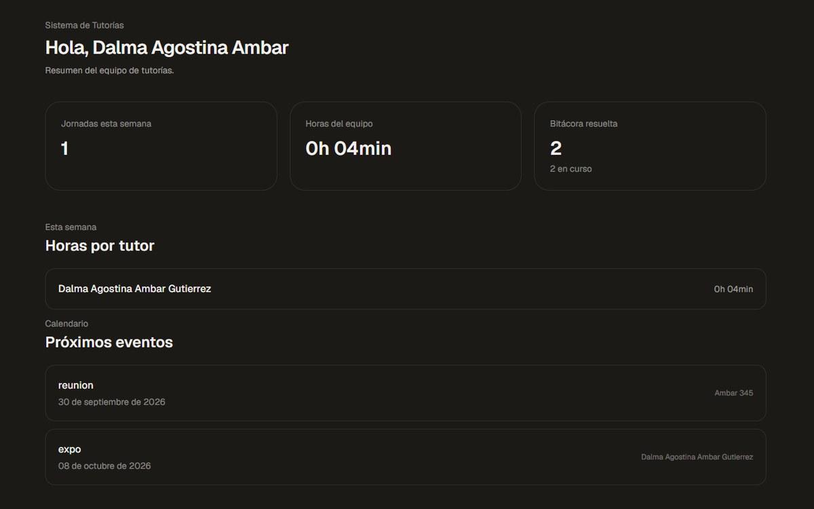

Desarrollo
Sitios y programas con Python, JavaScript, HTML/CSS — aprendiendo a escribir código prolijo y mantenible.
Hola, ¿qué tal?
Estudiante avanzado de Ingenieria Informatica y Licenciatura en Sistemas.
Advanced student of Computer Engineering and Systems Science.
Futura analista funcional y arquitecta de software — por ahora, terminando la carrera y armando mis primeros proyectos con soluciones reales.
Aspiring functional analyst and software architect—for now, finishing my degree and building my first projects featuring real-world solutions.
Sitios y programas con Python, JavaScript, HTML/CSS — aprendiendo a escribir código prolijo y mantenible.
Diplomatura en análisis de datos. Me atrae cruzarlo con el área de moda — tendencias, productos más usados — algo que todavía no exploré a fondo pero que tengo ganas de meterle.
Clasificación de texto, minería de datos y sistemas de búsqueda — lo que estoy cursando ahora en RAIn.
Estoy cursando las últimas materias de Ingeniería Informática y Licenciatura en Sistemas en la Universidad Nacional de Jujuy, y completé una diplomatura en análisis de datos.
Últimamente me metí en la comunidad de desarrolladores de Web3, sumándome a hackathones para seguir aprendiendo construyendo con otra gente. Todavía no trabajé en algo relacionado a mi carrera, pero sí en atención al cliente — ahí aprendí escucha activa, a entender lo que la otra persona necesita, y a laburar en equipo, algo que uso en cada proyecto que armo.
Proyectos académicos y personales desarrollados durante la carrera.

Sistema web creado para el equipo de tutorías de la FI: digitaliza el registro de horas, eventos y consultas, reemplazando el control manual y permitiendo auditoría y métricas.
Lógica, scripts y ejercicios de cátedra.
Programación declarativa y recursión.
Sitios estáticos, como este mismo portfolio.
Control de versiones y despliegue continuo.